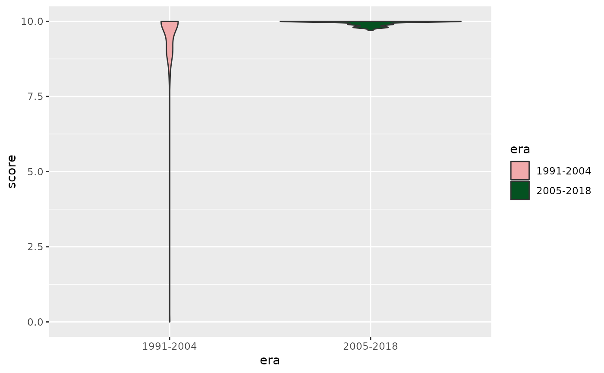

Function for using RioPalettes colors schemes in ggplot2. Use
scale_color_rio_d() and scale_fill_rio_d() for discrete scales and
scale_color_rio_c() and scale_fill_rio_c() for continuous scales.
Arguments
- palette_name
Name of Palette. Choices are:
Beija_Flor,Grande_Rio,Imperatriz_Leopoldinense,Imperio_Serrano,Mangueira,Padre_Miguel,Paraiso_Tuiuti,Portela,Salgueiro,Sao_Clemente,Tijuca,Uniao_Ilha,Vila_Isabel,Viradouro.- direction
Sets order of colors. Default palette is 1. If direction is -1, palette color order is reversed
- override.order
Colors are picked from palette to maximize readability. This means that colors are not always selected in sequential order from the full palette. If override.order is set to TRUE, colors are selected in sequential order from the full palette instead. Default is FALSE.
- ...
Other arguments passed on to
ggplot2::discrete_scale()
Examples
# Gets the scores of Mangueira from 1968 until 2018 on the Bateria criterion.
# Throws some warnings to inform the user which years are absent of the data
# (either from missing info or because the school didn't compete in the main league)
df <- get_scores(years = 1968:2018,
schools = "Acadêmicos do Grande Rio",
criterions = "BATERIA")
#> Warning: Your selection does not contains: 1968, 1969, 1970, 1971, 1972, 1973, 1974, 1975, 1976, 1977, 1978, 1979, 1980, 1981, 1982, 1983, 1984, 1985, 1986, 1987, 1988, 1989, 1990, 1992, 2011
# Loads ggplot2
library(ggplot2)
# Creates a plot and applies the palette of Grande Rio
df |>
mutate(era = case_when(
between(year, 1991, 2004) ~ "1991-2004",
between(year, 2005, 2018) ~ "2005-2018"
)) |>
ggplot(aes(x = era, y = score, color = era)) +
geom_violin() +
scale_fill_rio_d("Grande_Rio")
